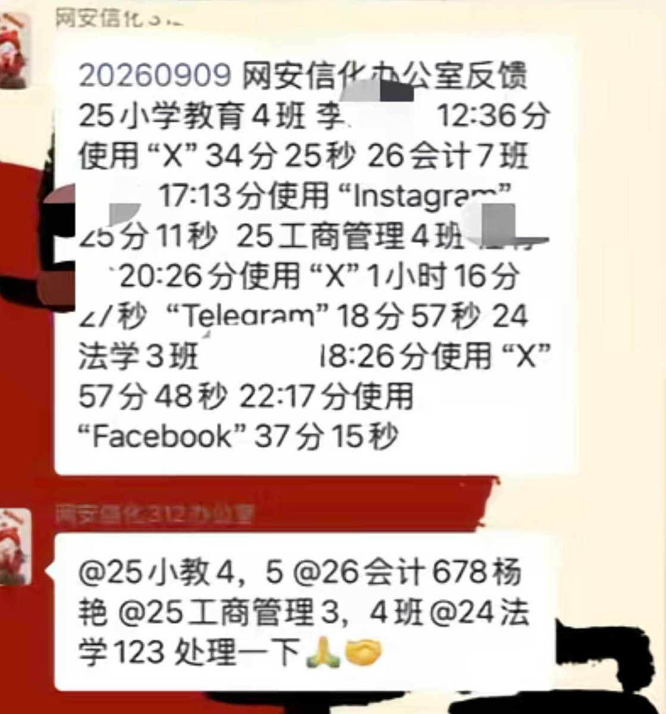
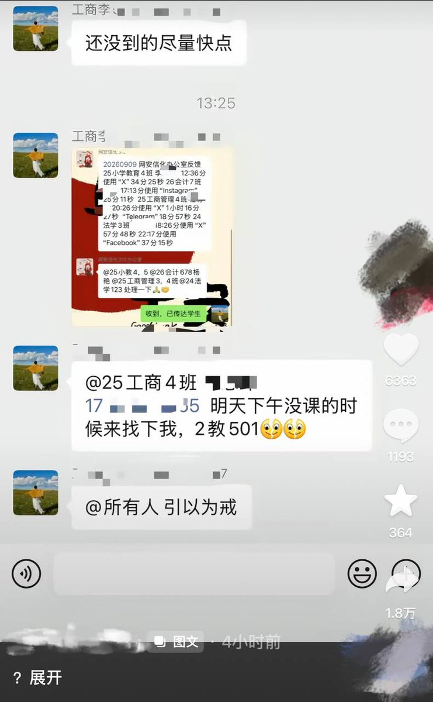

大部分国内高校用的是深信服和锐捷方案，以及DrCom做代拨认证，每个学期开学前学校就会把学生学号信息丢给校内营业厅，运营商在校园宽带办理后会将PPPoE认证信息与学号绑定
上网方式有客户端和web认证上网。客户端会阻止学生开热点，像深信服EasyConnect、aTrust装CA根证书，一般抓包即可得到鉴权方式
web认证就像连公共WiFi一样，浏览器会弹出captive portal，会记录https sni（看得到域名）还有流量特征？不过这个我倒是不信，因为高校和警务室串通好栽赃你一波
最后是解决方法。搞双不限流量卡+CPE在学校用，不用校园网基础设施，上教务处抢课等在虚拟机里面开个Windows连SSL VPN。如果你觉得校园网稳定，可以把翻墙流量打到国内的家里或腾讯阿里轻量200M，在上面把流量转发到境外落地。大学生连使用网易UU加速器都能叫翻墙，那为啥不把这些公司都废了，反而欺负弱小的大学生呢？

上网方式有客户端和web认证上网。客户端会阻止学生开热点，像深信服EasyConnect、aTrust装CA根证书，一般抓包即可得到鉴权方式
web认证就像连公共WiFi一样，浏览器会弹出captive portal，会记录https sni（看得到域名）还有流量特征？不过这个我倒是不信，因为高校和警务室串通好栽赃你一波
最后是解决方法。搞双不限流量卡+CPE在学校用，不用校园网基础设施，上教务处抢课等在虚拟机里面开个Windows连SSL VPN。如果你觉得校园网稳定，可以把翻墙流量打到国内的家里或腾讯阿里轻量200M，在上面把流量转发到境外落地。大学生连使用网易UU加速器都能叫翻墙，那为啥不把这些公司都废了，反而欺负弱小的大学生呢？


高校校园也能监控“翻墙”
9月10日，甘肃一名网友曝光某高校监控学生“翻墙”行为：该校“网安信息化办公室”甚至将使用校园网“翻墙”的同学名单列出，还将登录外网社交媒体的时长精确监控到秒。 https://t.co/OFI4lgAm62
9月10日，甘肃一名网友曝光某高校监控学生“翻墙”行为：该校“网安信息化办公室”甚至将使用校园网“翻墙”的同学名单列出，还将登录外网社交媒体的时长精确监控到秒。 https://t.co/OFI4lgAm62